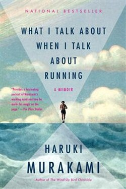

Library › Self-Improvement
What I Talk About When I Talk About Running — Summary & Key Lessons

Murakami's memoir of running and writing — talent is a myth; endurance is a discipline.
📖 OPEN THE FULL INTERACTIVE BREAKDOWN →🌐 Read it in Hindi, Hinglish, Gujarati, Tamil & 22 more languages — free, with audio.
💡 The Big Idea
Murakami, one of the world's great novelists, runs a marathon every year — and in this meditative memoir he explains the connection: both writing and running are sustained by the same unglamorous machinery — talent helps, but endurance, routine and the acceptance of solitude decide everything. Its central teaching is anti-glamour: motivation is a romantic myth; the real engine is a schedule you keep whether you feel like it or not. The book is a hymn to the ordinary discipline that makes extraordinary work possible.
🧠 The 6 Key Lessons
Lesson 1: Talent Is Overrated — Endurance Isn't
Chapter 1: The Gift Myth
Murakami dismantles the talent story from inside: he was a mediocre runner and a late-starting writer; what carried him was not gift but grinding consistency. Talent, he says, functions like a limited fuel tank — it helps at the start, but eventually it runs out, and only those who have built dependable engines (habits, routines, endurance) keep moving.
📖 Example: Murakami's own transformation: from an overweight jazz-bar owner to a marathoner — the change came from showing up daily, not from becoming gifted. Read the full example →
⚡ Do this: Pick one ability you envy in others and replace 'they have talent' with 'they have reps' — then add your own reps.
Lesson 2: The Schedule Beats the Mood
Chapter 2: The Routine
His method is brutal simplicity: run a fixed distance at a fixed time, write a fixed number of pages, every day. Because the schedule decides, motivation is never consulted. This is the deep insight of the book — the professional is defined not by inspiration but by the unbreakable appointment.
📖 Example: Murakami runs six days a week and writes about 10 pages a day; the output is planned, not waited for. Read the full example →
⚡ Do this: Set one fixed daily appointment for your core work — same time, same amount — and let the schedule carry you on bad days.
Lesson 3: The Pain Is Inevitable; Suffering Is Optional
Chapter 3: The Choice
Murakami's most-quoted line separates physics from psychology: pain (the fact of effort) is unavoidable in anything worthwhile; suffering (the added layer of resistance, complaint and self-pity) is a choice. The runner who accepts the pain stops fighting it — and finds the race gets lighter.
📖 Example: When his legs hit the wall at mile 20, he describes simply continuing — naming the pain without dramatising it, and so refusing the suffering. Read the full example →
⚡ Do this: When your next hard stretch arrives, separate the fact (this is hard) from the story (this is unbearable) — and drop the story.
Lesson 4: Solitude Is a Fertile Condition
Chapter 4: The Lonely Craft
Writing and running are both solitary — and Murakami makes solitude sound less like a cost and more like a condition of depth. The quiet hours are where the thinking happens; the loneliness is the rent you pay for the work you want to do. It is a needed correction to a culture that treats solitude as a problem.
📖 Example: The best ideas in this very book came while he ran alone through empty streets — the boring miles were the creative laboratory. Read the full example →
⚡ Do this: Schedule 30 solitary minutes daily — no input, no company, no device — and let your own mind surface in the silence.
Lesson 5: The Long Game: One Step at a Time
Chapter 5: The Marathon Mind
The marathon is the perfect metaphor for any ambitious life project: it is won by pacing, not by sprinting; the finish line is reached one ordinary step at a time, which no single step makes notable. Murakami's broader lesson: choose a goal distant enough to be worthy, then reduce it to today's run. The person who outlasts is not the strongest — they are the one who never stopped.
📖 Example: A book of 100,000 pages of output is a hundred thousand ten-page days — the marathon, not the sprint. Read the full example →
⚡ Do this: Define your marathon (a 3-year goal), then design today's one run — the single step that moves it forward.
Lesson 6: The Rules from the Road
Chapter 5: The Run and the Desk
Murakami's central analogy is literal: the daily run — fixed distance, patient pace, no shortcuts — transfers directly to the desk. Writing is not inspiration; it is mileage, and the discipline of the road keeps the discipline of the page honest. He calls the two sides of the same coin: when the running stops, the writing declines with it.
📖 Example: Murakami's rule: run six days a week, write ten pages a day — the same patient machinery, different sport; the novelist trains like an athlete. Read the full example →
⚡ Do this: Choose your 'second sport' — the daily physical practice that keeps your main craft honest — and schedule it like the craft.
✅ 5-Step Action Plan
- Replace talent-talk with rep-talk; start your reps today.
- Fix a daily schedule for core work independent of mood.
- Drop the story when the pain arrives; keep the fact.
- Take 30 minutes of daily solitude for your own thinking.
- Name a 3-year marathon and design today's one run.
⚠️ When This Doesn't Work
Murakami's privilege is real — a full-time writing life, a body that cooperated, and support few possess. The discipline transfers; the circumstances do not. And running obsessively is not for everyone: listen to your body and your doctor first.
💀 The Graveyard Proves It
📷 Evander Holyfield's Ear Aside — Tyson's Entourage — $400M Earned; Bankrupt With 200 People on Payroll. Burn: $400M career → $23M in debt Read the full case study →
💬 Best Quotes from What I Talk About When I Talk About Running
- “I'm not a talented novelist. I've simply worked at it, and I continue to work at it.”
- “Most of what I know about writing I've learned through running every day.”
- “The pain is inevitable. The suffering is optional.”
Interactive version: mark lessons as read, listen in your language, share quote cards.